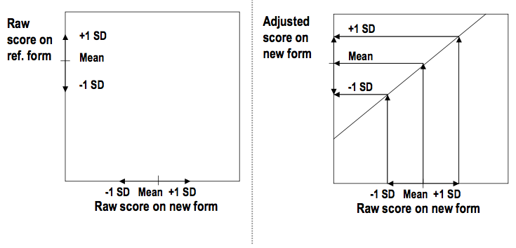
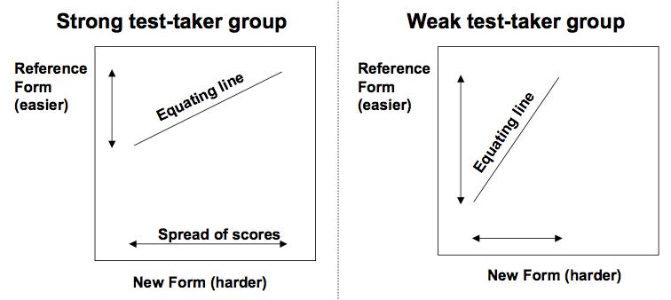

Consider the salary of a teacher at a school now and in 1950
Is it fair to compare their salaries?
There salaries will most certainly not be the same
The krona has changed a lot, right?
How can we most fairly compare these salaries?
One possibility would be to compare the salaries against a set up comparable goods (e.g. price of milk, liter of gas, price of a stamp, etc)
Tests need to be comparable across forms
We need to scale our scores to adjust for different difficulty
For each possible raw score, we will come up with a scaled score based on the difficulty of the questions
Review: What measurement framework do you think we are using?
| Scaled Scores | |||
| Raw Score | Form A | Form B | Form C |
| 50 | 130 | 130 | 130 |
| 49 | 130 | 130 | 128 |
| 48 | 129 | 130 | 126 |
| 47 | 127 | 130 | 124 |
| 46 | 126 | 130 | 122 |
| 45 | 124 | 129 | 120 |
| 44 | 121 | 128 | 118 |
| 43 | 119 | 127 | 115 |
| 42 | 118 | 126 | 114 |
| 41 | 117 | 125 | 113 |
| 40 | 116 | 124 | 110 |
| New Form Raw-to-Raw | Reference Form Raw-to-Scale | ||
| New | Reference | Reference | Scaled |
| ... | ... | ... | ... |
| 39 | 43.25 | 44 | 109.765 |
| 38 | 42.80 | 43 | 107.643 |
| 37 | 41.75 | 42 | 106.902 |
| 36 | 41 | 41 | 103.853 |
What should someone with a 38 on the new form get for a scaled score?
38's reference test score was 42.80
This is 80% of the way between 42 and 43
# 80% of the way between 42 and 43
(107.643 - 106.902) * .80
[1] 0.5928
# Add this to the score for 42
106.902 + 0.5928
[1] 107.4948
They should get a 107.4948
Decide on the mean and standard deviation of a group of test takers
Choose two raw scores, specify their scaled scores, then linearly interpolate the other scores
A test taker may know more answers on one form of a test
Equating is unable to adjust scores correctly for every test taker!
We strive to be approximately correct for our target population
Two groups could differ based on emphasized material (e.g. a teacher effect)
Equating results in discrete scores (well, we report them that way)
A score of 20 on test form A corresponds to a score of 25 on test form B
A score of 25 on test form B corresponds to a score of 20 on test form A
This is known as symmetry
Statistical prediction isn't like this!
mod1 <- lm(speed ~ dist, cars)
mod2 <- lm(dist ~ speed, cars)
predict(mod1, newdata = list(dist = 100))
1
24.84066
predict(mod2, newdata = list(speed = 24.84066))
1
80.10453
“A score on the new form and a score on the reference form are equivalent in a group of test takers if they represent the same relative position in the group.”
The simplest form of equating involves adjusting the scores by the difference in means between the reference and new forms
Substraction of values if the new form is easier
Addition of values if the new form is harder
Suppose the target population's mean on the reference form was 80 and their mean on the new form was 85.
We need to adjust based on how high or low a test taker's score is from the mean
What might we consider doing?
“ A score on the new form and a score on the reference form are equivalent in a group of test takers if they are the same number of standard deviations above or below the mean of the group. ”
Linear equating a harder new form (Livingston, 2014)
Let NF stand for a score on the new form and RF a score on the reference form
$$ \frac{RF - \bar{RF}}{sd(RF)} = \frac{NF - \bar{NF}}{sd(NF)} $$What do these formulas look like?
Note, the adjusted NF score is very unlikely to ever be a whole number
| Form | Mean | Standard Deviation |
| Reference | 82 | 15 |
| New | 79 | 14 |
If someone scored an 80 on the new form, what should there reference form score be?
# Do the math in R and save it as RF
RF <- (15 / 14) * 80 + 82 - (15 / 14) * 79
# Print RF
RF
[1] 83.07143
Does 83.07413 seem sensible?
A very high or very low score can equate to a score outside of the range on the reference form
Depends heavily on the group of test takers (e.g. are they strong test takers? weak test takers?)
“To equate scores on the new form to scores on the reference form in a group of test takers, transform each score on the new form to the score on the reference form that has the same percentile rank in that group.”
15th percentile of the adjusted test form corresponds (as much as possible) to 15th percentile on the reference form and so on
Adjusted scores will all fall within the range of possible scores on the reference form
The steepness of the slope of the curve can vary
Will result in the adjusted test scores having a similar distribution to the reference form
Will be identical to linear equating when the distribution of scores on the new form has the same shape as the distribution of the scores on the reference form
Equating relationship is bound by the highest and lowest observed score
On a difficult test, the highest possible raw score might not be observed
Future administration could result in a higher score being observed
Smoothing may help with this
Can use interpolation to calculate unobserved raw score